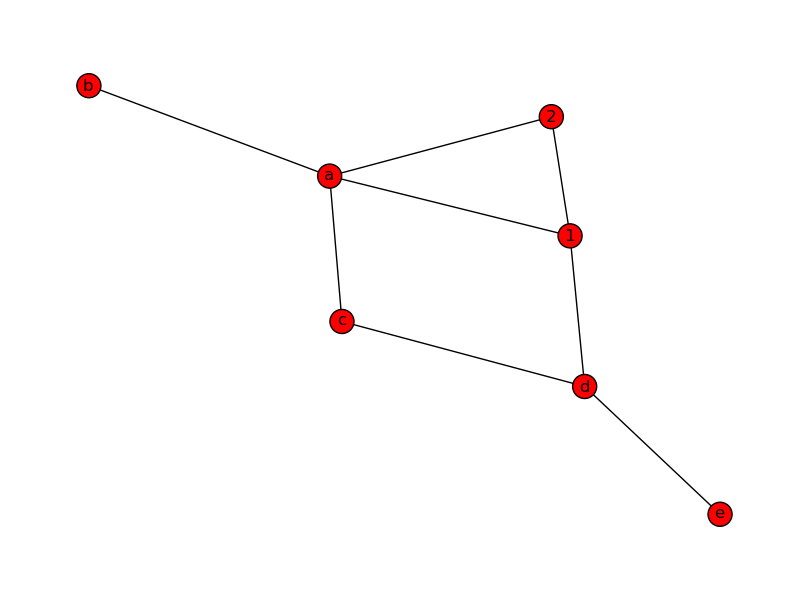
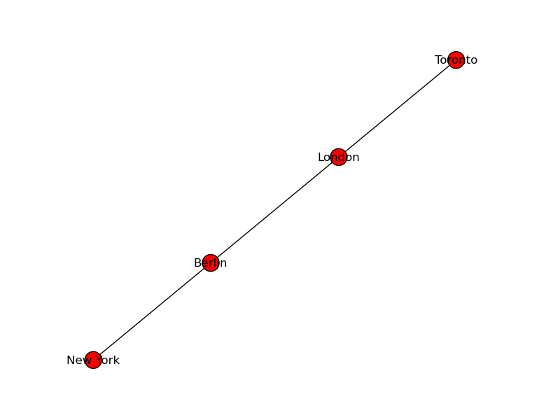

NetworkX
Overview
NetworkX is a Python language software package for the creation, manipulation, and study of the structure, dynamics, and functions of complex networks. Pygraphviz is a Python interface to the Graphviz graph layout and visualization package.
- Python language data structures for graphs, digraphs, and multigraphs.
- Nodes can be "anything" (e.g. text, images, XML records)
- Edges can hold arbitrary data (e.g. weights, time-series)
- Generators for classic graphs, random graphs, and synthetic networks
- Standard graph algorithms
- Network structure and analysis measures
- Basic graph drawing
- Open source BSD license
- Well tested: more than 1500 unit tests
- Additional benefits from Python: fast prototyping, easy to teach, multi-platform
Creating a Graph
Create an empty Graph
Our first example of a graph will be an empty graph. To see the proper mathematical definition of a graph, you can have a look at our previous chapter Graphs in Python. The following little Python script uses NetworkX to create an empty graph:import networkx as nx G=nx.Graph() print(G.nodes()) print(G.edges()) print(type(G.nodes())) print(type(G.edges()))If we save this script as "empty.py" and start it, we get the following output:
$ python3 empyty.py [] [] <class 'list'> <class 'list'>We can see, that the result from the graph methods nodes() and edges() are lists.
Adding Nodes to our Graph
Now we will add some nodes to our graph. We can add one node with the method add_node() and a list of nodes with the method add_nodes_from():
import networkx as nx
G=nx.Graph()
# adding just one node:
G.add_node("a")
# a list of nodes:
G.add_nodes_from(["b","c"])
print("Nodes of graph: ")
print(G.nodes())
print("Edges of graph: ")
print(G.edges())
Adding Edges to our Graph
G can also be created or increased by adding one edge at a time by the method add_edge(), which has the two nodes of the edge as the two parameters. If we have a tuple or a list as the edge, we can use the asterisk operator to unpack the tupel or the list:
import networkx as nx
G=nx.Graph()
G.add_node("a")
G.add_nodes_from(["b","c"])
G.add_edge(1,2)
edge = ("d", "e")
G.add_edge(*edge)
edge = ("a", "b")
G.add_edge(*edge)
print("Nodes of graph: ")
print(G.nodes())
print("Edges of graph: ")
print(G.edges()
In our previous example, the first edge consists of the nodes 1 and 2, which had not been included in our graph so far. The same is true for the second edge with the tuple ("d", "e"). We can see, that the nodes will be automatically included as well into the graph, as we can see from the output:
Nodes of graph:
['a', 1, 'c', 'b', 'e', 'd', 2]
Edges of graph:
[('a', 'b'), (1, 2), ('e', 'd')]
We can add a bunch of edges as a list of edges in the form of 2 tuples.
# adding a list of edges:
G.add_edges_from([("a","c"),("c","d"), ("a",1), (1,"d"), ("a",2)])
We can also print the resulting graph by using matplotlib:
nx.draw(G)
plt.savefig("simple_path.png") # save as png
plt.show() # display

Generate Path Graph
We can create a Path Graph with linearly connected nodes with the method path_graph(). The Python code code uses matplotlib.pyplot to plot the graph. We will give detailled information on matplotlib at a later stage of the tutorial:
import networkx as nx
import matplotlib.pyplot as plt
G=nx.path_graph(4)
print("Nodes of graph: ")
print(G.nodes())
print("Edges of graph: ")
print(G.edges())
nx.draw(G)
plt.savefig("path_graph1.png")
plt.show()
The created graph is an undirected linearly connected graph, connecting the integer numbers 0 to 3 in their natural order:

Renaming Nodes
Sometimes it is necessary to to rename or relabel the nodes of an existing graph. For this purpose the function relabel_nodes is the ideal tool.
networkx.relabel.relabel_nodes(G, mapping, copy=True)
The parameter G is a Graph, the mapping has to be a dictionary and the last paramater is optional. If copy is set to True, - which is the default - a copy will be returned, otherwise, i.e. if it is set to False, the nodes of the graph will be relabeled in place.
In the following example we create again the Path graph with the node labels from 0 to 3. After this we define a dictionary, in which we map each node label into a new value, i.e. city names:
import networkx as nx
import matplotlib.pyplot as plt
G=nx.path_graph(4)
cities = {0:"Toronto",1:"London",2:"Berlin",3:"New York"}
H=nx.relabel_nodes(G,cities)
print("Nodes of graph: ")
print(H.nodes())
print("Edges of graph: ")
print(H.edges())
nx.draw(H)
plt.savefig("path_graph_cities.png")
plt.show()
The Python program returns the following output:
Nodes of graph:
['Toronto', 'Berlin', 'New York', 'London']
Edges of graph:
[('Toronto', 'London'), ('Berlin', 'New York'), ('Berlin', 'London')]
The visualized graph looks liks this:

When we relabelled the graph G in our previous Python exampls, we create a new graph H, while the oringinal graph G was not changed. By setting the copy parameter flag to False, we can relabel the nodes in place without copying the graph. In this case the line
H=nx.relabel_nodes(G,cities)will be changed to
nx.relabel_nodes(G,cities, copy=False)
This approach might lead to problems, if the mapping is circular, while copying is always safe. The mapping from the nodes of the original node labels to the new node labels doesn't have to be complete. An example of a partial in-place mapping:
import networkx as nx
G=nx.path_graph(10)
mapping=dict(zip(G.nodes(),"abcde"))
nx.relabel_nodes(G, mapping, copy=False)
print("Nodes of graph: ")
print(G.nodes())
Only the nodes 0 to 4 are nenamed, while the other nodes keep the numerical value, as we can see in the output from the program:
$ python3 partial_relabelling.py Nodes of graph: [5, 6, 7, 8, 9, 'c', 'b', 'a', 'e', 'd']The mapping for the nodes can be a function as well:
import networkx as nx
G=nx.path_graph(10)
def mapping(x):
return x + 100
nx.relabel_nodes(G, mapping, copy=False)
print("Nodes of graph: ")
print(G.nodes())
The result:
$ python3 relabelling_with_function.py Nodes of graph: [107, 106, 103, 108, 109, 104, 105, 100, 102, 101]